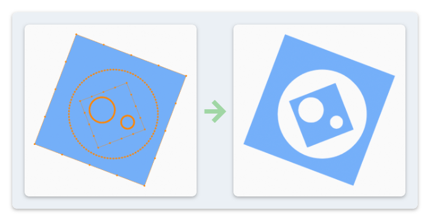

Hole Holdout #
To display holes inside a shape's fill, Blender has a unique mechanism in Grease Pencil that is different from most vector graphic editing software. Users need to manually enable a Holdout option in the material setting to make a stroke transparent.

To simplify this process, NijiGPen provides with an operator to automatically detect holes among selected strokes. If a stroke's path is completely inside another stroke's fill:
- It will be arranged upward to display in front of the stroke it is in.
- It will be turned transparent by assigning a material with all attributes unchanged except the
Holdoutoption being enabled.- If such material does not exist, a new material will be created first.
Interaction with Other Operators #
This operation is also executed automatically as a step in many other operators, including SVG Paste, Color Image Vectorization, Smart Fill and Mesh Generation.
Please also refer to the Limitation page for more information about processing holes.